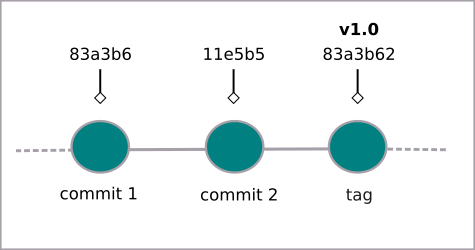
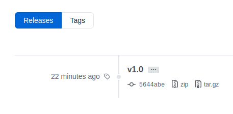

Etiquetas (tags) são importantes para a organização dos nossos projetos. Elas demarcam um ponto (commit) que consideramos relevante e que representa alguma mudança significativa no nosso código.
É com elas que fazemos a versão (ou release) de um projeto (v1.0, v2.0 e assim por diante).
Criando etiquetas (tags)
$ git tag -a <nome_da_etiqueta> -m 'insira sua mensagem aqui'
- $ indica que você deve usar o usuário comum para fazer essa operação.
- git tag chamando o git e em seguida o comando para criar a etiqueta (tag).
- -a identifica o tipo da tag; nesse caso é annotated (anotada).
- digite o nome para a etiqueta sem os símbolos < >.
- -m informa ao git que haverá uma mensagem; que será digitada entre aspas simples ou duplas.
Exemplo:
$ git tag -a v1.0 -m "minha versão 1.0"
Esse tipo de etiqueta (tag) armazena uma série de objetos de dados do git, como checksum (soma de verificação; é um código usado para verificar a integridade de dados), um nome, email, data, arquivos alterados, entre outros.
O mais recomendado é que você crie etiquetas anotadas (annotated tags) assim você tem acesso a mais informações.
Abaixo temos o fluxo do git que contém uma tag.
Verificando as etiquetas (tags)
$ git tag
E o retorno serão todas as etiquetas (tags) já criadas.
É importante notar que a etiqueta é criada no commit atual.
Para ver as informações mais detalhadas sobre uma determinada etiqueta (tag), digite:
$ git show <nome_da_etiqueta>
- show é o comando que vai mostrar as informações detalhadas na etiqueta (tag).
Etiqueta (tag) no repositório remoto
Com a tag já criado, só precisamos enviar para o repositório remoto:
$ git push origin <nome_da_etiqueta>
É possível ir até o seu repositório remoto e verificar a versão:
Criando tag em um commit passado
$ git tag -a <nome_da_etiqueta> <chave_do_commit> -m 'insira sua mensagem aqui'
Exemplo:
$ git tag -a v0.1 c5d15de -m "versão beta"
Para verificar a chave do commit que deseja, use o comando
$ git log --oneline
Excluindo uma etiqueta (tag)
Não é usual que as etiquetas (tags) sejam excluídas, mas caso seja necessário, primeiro é preciso fazer a exclusão local. Assim:
$ git tag -d <nome_da_etiqueta>
- -d de delete, para excluir a etiqueta (tag).
E em seguida fazemos a exclusão no repositório remoto:
$ git push --delete origin <nome_da_etiqueta>